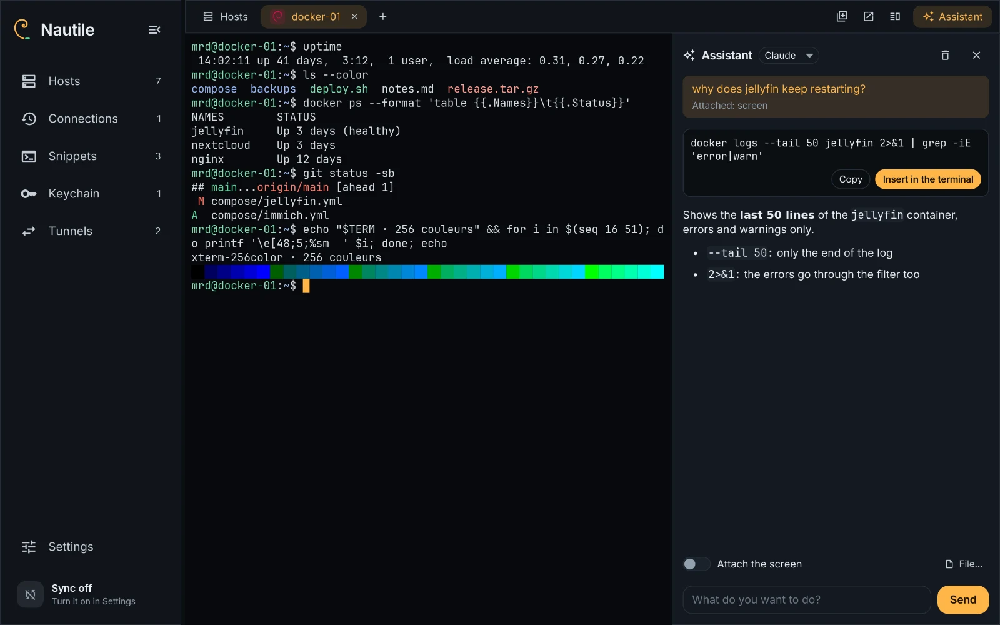
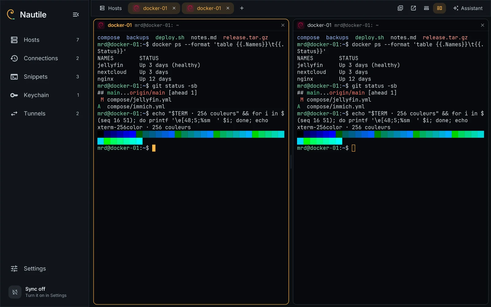
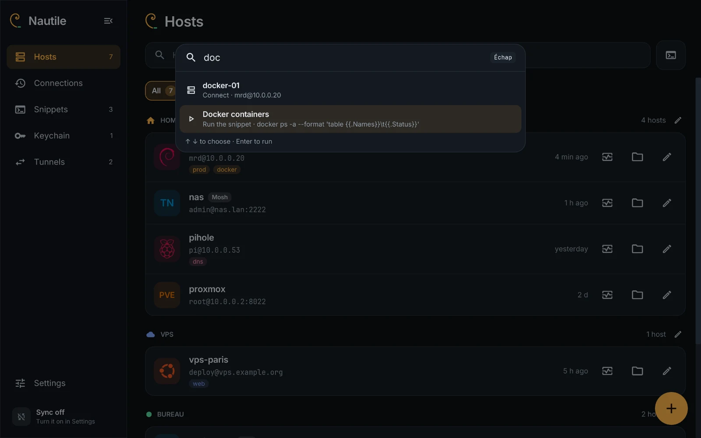
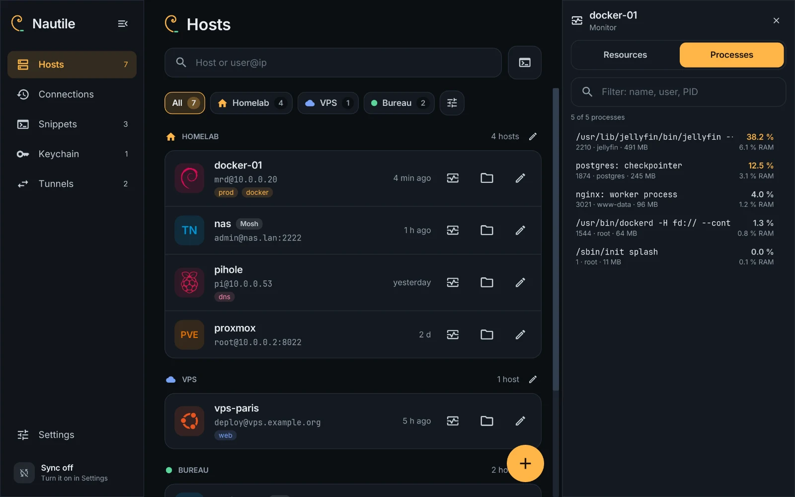

A real terminal
xterm-256color, tabs and split screen, pinch to zoom, a key bar you arrange, 10 themes and 5 Nerd Fonts (or your own).
A free SSH, Mosh and remote-desktop client for Android, and now for Windows, Linux and macOS. A real terminal, SFTP, tunnels, snippets and encrypted sync between your devices. No cloud, no account.


0 account · 0 ads · 0 trackers
// 01 — SCREENSHOTS
Big touch targets, a key bar for what the keyboard lacks, and everything one gesture away: connect, reopen a session, run a snippet.






// 02 — FEATURES
xterm-256color, tabs and split screen, pinch to zoom, a key bar you arrange, 10 themes and 5 Nerd Fonts (or your own).
Keys and identities, agent forwarding, ProxyJump, SOCKS5/HTTP proxies, port knocking and host-key pinning.
FreeRDP 3 inside: NLA, hardware H.264, sound, clipboard, through an SSH tunnel if needed. And VNC for Linux, macOS and Raspberry Pi.
SFTP with background transfers, multi-select and remote editing, -L -R -D forwards, commands with variables run on several servers.
Phones, tablets and computers stay in step, theme by theme. Everything is encrypted before it leaves, sync can wait for your VPN, and backups run on your schedule.
Claude, OpenAI, Gemini, Grok, Mistral, DeepSeek or a local model, with your own key. Attach the terminal screen or a config file.
Live previews of open terminals and desktops, a searchable history, a confirmation before closing a session.
// 03 — ON YOUR COMPUTER
A native app written in Rust, about 35 MB of RAM, with the phone's look and settings. It reads the phone's backups and stays in step with it, through a shared file or straight over Wi-Fi.
~/.ssh/config or CSV, with groups, jump hosts and keys.
// 04 — PRIVACY
Nautile has no server and collects nothing. The update check, if you accept it at first launch, contacts GitHub once a day.
The optional AI assistant only sends your question, the host's address and what you attach. After a crash, an anonymised report you read, then post yourself.
// 05 — DOWNLOAD
Free, in English and French. Every file is on the GitHub releases page.
arm64-v8a for almost every recent phone, armeabi-v7a for older ones, the universal one if unsure.~/.ssh/config, or type user@address to connect right away.Others: armeabi-v7a · universal
With Obtainium (automatic updates)Package com.nautile, certificate SHA-256:
Not signed yet: SmartScreen shows « Windows protected your PC » › More info › Run anyway.
Not notarised yet: open it once, then System Settings › Privacy & Security › Open Anyway.
Checksums: SHA256SUMS.txt (Android) and SHA256SUMS-desktop.txt, with every release.
Yes. Nautile is free software under the GPL-3.0, with no ads, no subscription and no account.
Only on your devices, in a SQLCipher database. If you turn on sync, they are encrypted before they leave for the storage you chose.
Yes: import a ~/.ssh/config or a CSV, with groups, jump hosts and keys.